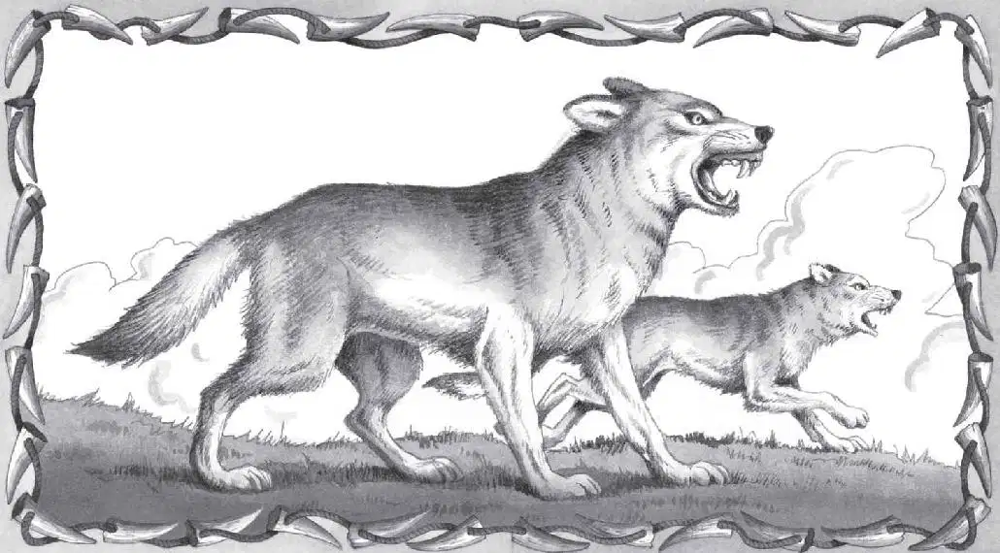

Dire Wolf
The Ice Age dire wolves were larger than wolves today. They were about five feet long and weighed more than 110 pounds. They had strong legs and a wide head.

The dire wolves seemed to have hunted in packs. They had extremely large, powerful teeth. Scientists think they used them to crush the bones of their prey. Their teeth could also grip large animals and hang on tightly.
More than 3,600 dire wolves have been found in the La Brea Tar Pits. Many of their skulls show signs of injury. Scientists think they got these wounds from being kicked in the head by animals they were attacking.